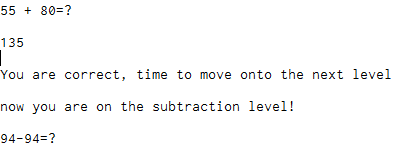
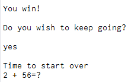
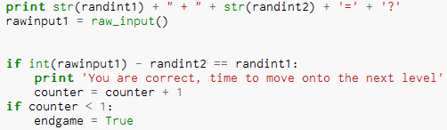

My project is a game that will ask you a math question, at first it will be a simple addition problem and if you get it right you will move on to a subtraction problem but if you get it wrong you will have to start over. After the subtraction problem is a multiplication problem and then if you get that right you will move on to the final equation which is a division problem. If you get all the problems right you win.
Even though this project seems relatively easy we encountered quite a few problems. Some of the problems that we might encounter are trying to get Python to come up with two random numbers but make sure that it doesn't add, subtract, multiply or divide them by itself; it leaves the two numbers in the equation form for the user to solve. Also, we will need to figure out how we can let Python know when the user got the question right or wrong. Another thing we will need to find a way to use a for loop for when the user gets an equation wrong because if that happens the program needs to restart from the addition equation. Overall this was a fun code to create because it challenged me and my partners coding ability.
Go to my GitHub page by clicking here
The image below is showing the first problem in our program. The first problem is an easy addition problem and as you can see the user got this equation correct so he moves on to a more challenging subtraction problem.
In this image you see the last bit of our code. In this part the user has already finished the game and is asked if they want to play again or if they want to stop playing. If they say "yes" they get a response saying "Time to start over" else it says "Game Over"
The image below is showing the first equation code in our program. As you can see we added two random integers and then in order to see if the user got the question right we subtracted the second random integer from the user input and equaled that to the first random integer.
